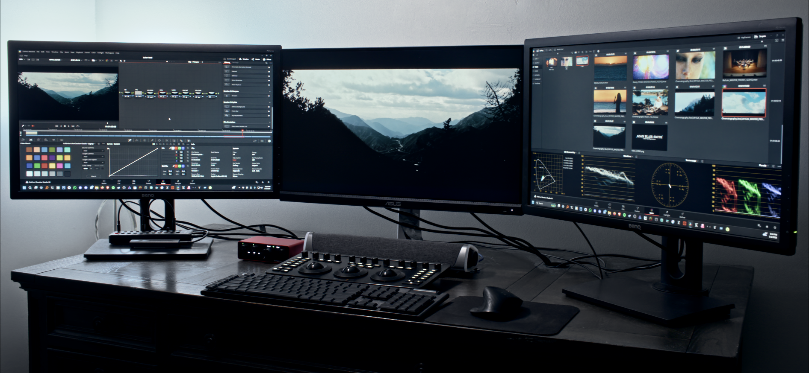

- Hi, I'm Adam -
I'm a Colorist currently living in Atlanta, GA.
I specialize in creating engaging and visually appealing images backed by solid color science.
I own and operate a SMPTE compliant color grading suite, so that
my clients can have confidence that their project will look
it's best regardless of where it's shown.
Besides color grading, I'm also a software programmer,
so I can create custom tools that help me complete my work.
Among my other social media below, you can explore my
Github account, where you can find my code and projects.
In my free time, I am an aviation enthusiast that enjoys
several flight simulators, as well as learning about aircraft online.
I am also an award-winning photographer, and I'm often out exploring with my camera.